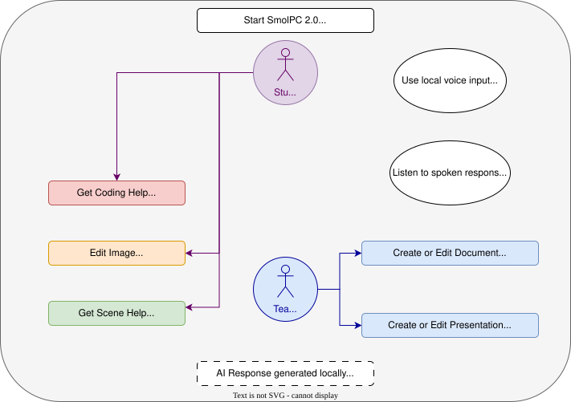

Requirements
Partner Introduction
SmolPC 2.0 sits within a wider partner and ecosystem context, but these organisations were not direct day-to-day implementation contributors to the final build. Their relevance to the project is mainly through platform context, deployment environment, or the technologies that shaped the runtime strategy.
Intel
Intel is relevant to SmolPC 2.0 primarily because OpenVINO and Intel hardware support informed part of the local runtime strategy. The project uses OpenVINO where it is the best supported option on the target Windows device, but Intel was not directly embedded in day-to-day development of the final implementation.
Microsoft
Microsoft is relevant mainly because SmolPC 2.0 is a Windows-first desktop application and part of the runtime path relies on Windows-compatible tooling such as DirectML and ONNX Runtime packages. Microsoft did not have direct hands-on involvement in the final implementation.
IBM
IBM forms part of the wider partner context around the project, but it was not a direct technical contributor to the final SmolPC 2.0 implementation. Its role in this report is therefore contextual rather than implementation-specific.
Motion Input Games
Motion Input Games is a UCL spin-out that develops gesture and motion-based input technology, enabling users to control software through physical movement rather than traditional input devices. Their work focuses on making computing more accessible, particularly for users with disabilities, and has been deployed across a range of educational and creative applications.
Project Background
Artificial intelligence is transforming education, yet access to AI-powered learning tools remains deeply unequal. Most mainstream systems still depend on cloud accounts, reliable internet connectivity, and platform lock-in, which makes them difficult to deploy in privacy-sensitive or under-resourced educational settings. According to UNESCO, the majority of primary schools and a significant proportion of secondary schools worldwide lack internet connectivity. [1] At the same time, teachers are under increasing workload pressure [2], and schools risk falling further behind in the emerging AI divide. [3]
The project began from an earlier SmolPC LibreOffice prototype that demonstrated local AI assistance was possible, but also exposed important limitations. It centred on one application, relied on a more cumbersome local inference setup, and did not translate cleanly into a broader classroom platform. As the project scope expanded to include a dedicated coding workflow together with GIMP and Blender support, it became clear that simply extending the old architecture would create repeated deployment, security, and maintainability problems.
Those constraints shaped the final direction of SmolPC 2.0. Rather than remaining a LibreOffice-first prototype, the project evolved into a unified offline AI platform with coding support as the flagship workflow and shared support for writing, presentations, image editing, and 3D workflows. This shift also changed the technical requirements: Windows-first packaged deployment, local privacy, easier setup, reduced installation burden, and hardware-aware local inference became core project goals rather than secondary concerns.
Project Goals
The overarching goal of SmolPC 2.0 is to deliver a free, offline, open-source AI assistant suite that integrates directly into the software students already use, including coding, LibreOffice, GIMP, and Blender workflows, while remaining realistic to deploy on a range of school and personal devices. Rather than assuming one fixed hardware profile, the system is designed to recognise the best supported local runtime path on the current machine and keep local AI practical without cloud dependence.
Specifically, SmolPC 2.0 aims to:
Gathering Requirements
Requirements were gathered iteratively rather than fixed once at the start. Because SmolPC evolved through several architectural pivots during development, the final requirements reflect both early stakeholder goals and constraints discovered through implementation.
- Legacy baseline: we reviewed the original SmolPC LibreOffice and Ollama-based prototype to identify what was reusable and what prevented broader adoption.
- Scope expansion: new project objectives introduced a dedicated coding workflow together with assistants for GIMP and Blender, turning the project from a single-application prototype into a multi-workflow platform.
- Prototype-driven refinement: early assistant development exposed problems around duplicated inference logic, security boundaries, Windows packaging, and the deployment overhead of relying on a separately managed model server.
- Deployment-driven refinement: as the goal shifted towards realistic school deployment, requirements expanded to include a unified app, a shared local engine, hardware-aware runtime selection, direct model management inside the product, and a setup flow that avoids asking students or teachers to install Ollama or manage inference infrastructure manually.
We did not rely on a formal pupil survey. Direct access to school-age users was limited for safeguarding reasons, so requirements were refined through supervisor discussions, teacher-facing feedback, prototype evaluation, and iterative internal testing of realistic workflows.
We also compared mainstream cloud AI tools with the deployment assumptions required for SmolPC 2.0. This was not intended as a general product ranking; it was a way to highlight why privacy, offline use, easier deployment, local control, and predictable classroom setup became decisive requirements for this project.
Later accessibility-oriented implementation work on voice interaction reinforced the same conclusion: if speech input or read-aloud support was included, it still needed to run locally, avoid separate cloud services, and degrade safely when audio hardware or bundled voice resources were unavailable.
| Criterion | Microsoft Copilot | ChatGPT | Google Gemini | SmolPC v2.0 (ours) |
|---|---|---|---|---|
| Internet required during normal use | Yes | Yes | Yes | No |
| User data processed off-device | Yes | Yes | Yes | No |
| Account or platform dependency for core use | Yes | Yes | Yes | No |
| Suitable for privacy-preserving local deployment | No | No | No | Yes |
| Open-source and redistributable core stack | No | No | No | Yes |
Table 1. Comparison of deployment assumptions between mainstream cloud AI tools and SmolPC v2.0.
Personas
Based on the information we've collected, we constructed the following personas:
Persona of a Student

A secondary-school student who uses a school or personal laptop for programming, coursework, presentations, and creative assignments. They are comfortable asking questions in plain English, but not configuring local AI tooling or debugging installation problems. They need a tool that feels approachable, keeps their work private, and helps across more than one subject area.
Persona of a Teacher

A teacher or teaching assistant who prepares lesson material, supports students in computing and digital media work, and values predictable deployment. They want useful AI support for classroom tasks, but cannot depend on cloud services, paid subscriptions, or setup steps that would be difficult to repeat across many student devices.
Use Case Diagram
SmolPC 2.0 — User Interactions

Figure 1. High-level use case diagram for SmolPC 2.0 as a unified local AI platform.
Use Case List
The following use cases describe how students and teachers interact with SmolPC v2.0 as a unified local AI platform. Each use case maps to one or more functional requirements listed in the MoSCoW section below.
UC1 — Start SmolPC and Send a Text Request
| Actor | Student / Teacher |
| Pre-condition | SmolPC 2.0 is open and the shared local engine is available. |
| Main Flow |
|
| Post-condition | The response is visible in the active workspace and the request has been handled locally, with optional local audio playback if requested. |
| Exception | If the runtime or host application is unavailable, the user is shown setup guidance or a clear recoverable error. |
UC2 — Get Coding Help in Code Mode
| Actor | Student / Teacher |
| Pre-condition | Code mode is active in the unified SmolPC application and the shared engine is ready. |
| Main Flow |
|
| Post-condition | Student receives a locally generated coding answer suited to the task. |
UC3 — Create or Edit a Document in LibreOffice Writer
| Actor | Student / Teacher |
| Pre-condition | LibreOffice is installed and Writer mode is available in SmolPC. |
| Main Flow |
|
| Post-condition | The document is updated locally according to the request. |
UC4 — Create or Edit a Presentation in Slides
| Actor | Student |
| Pre-condition | Slides mode is available in SmolPC and LibreOffice is installed. |
| Main Flow |
|
| Post-condition | The presentation is created or updated locally according to the request. |
UC5 — Edit an Image in GIMP
| Actor | Student |
| Pre-condition | GIMP is installed on the device and GIMP mode is selected. |
| Main Flow |
|
| Post-condition | The requested image edit is completed locally inside the GIMP workflow. |
UC6 — Get Scene-Aware Help in Blender
| Actor | Student / Teacher |
| Pre-condition | Blender is installed and Blender mode is available in SmolPC. |
| Main Flow |
|
| Post-condition | User receives Blender help that is grounded in the local workflow rather than a generic web-style answer. |
UC7 — Switch Modes and Continue Previous Work
| Actor | Student / Teacher |
| Pre-condition | At least one previous conversation exists locally and the unified application is open. |
| Main Flow |
|
| Post-condition | Mode-specific work and chat history remain available inside one unified application. |
MoSCoW Requirements
Requirements were prioritised using the MoSCoW method, separating what the system must deliver from what would be beneficial but is not critical. The list below reflects the final agreed requirements following stakeholder interviews and pseudo-user testing.
Functional Requirements
| ID | Requirement | Priority |
|---|---|---|
| FR-M1 | The platform shall accept natural language requests via text input across all assistant modes. | Must Have |
| FR-M2 | The platform shall provide a unified desktop shell that brings together the Code mode and assistant workflows for LibreOffice, GIMP, and Blender. | Must Have |
| FR-M3 | The Code mode shall answer coding questions, explain programming concepts, and generate or debug code in plain language. | Must Have |
| FR-M4 | The LibreOffice assistant shall support document and presentation workflows through natural language requests. | Must Have |
| FR-M5 | The GIMP assistant shall support image-editing workflows through natural language requests. | Must Have |
| FR-M6 | The Blender assistant shall support scene-aware 3D help and workflow guidance through natural language requests. | Must Have |
| FR-M7 | All AI inference shall run locally on-device during normal use, with no cloud dependency after setup. | Must Have |
| FR-M8 | SmolPC 2.0 Home shall provide a unified launcher for all tools without requiring the user to open separate applications. | Must Have |
| FR-S1 | The system shall display a visible loading indicator while the AI model is processing a request. | Should Have |
| FR-S2 | The system shall persist chat history per tool across sessions so users can continue previous conversations. | Should Have |
| FR-S3 | The platform shall detect required host applications and provide setup guidance when a workflow is unavailable. | Should Have |
| FR-S4 | The platform shall choose the best supported local runtime path for the current machine and fall back gracefully when a preferred accelerator is unavailable. | Should Have |
| FR-S5 | The unified app shall allow users to open or focus the relevant host application directly from the active workflow. | Should Have |
| FR-S6 | The system shall allow users to recover from missing prerequisites or runtime failures without losing chat state. | Should Have |
| FR-S7 | SmolPC 2.0 should support optional local voice input and read-aloud so users can dictate prompts and hear responses when compatible audio hardware is available. | Should Have |
| FR-C1 | The platform could include local benchmark or diagnostics features to help compare runtime behaviour on different machines. | Could Have |
| FR-C2 | A local retrieval-augmented workflow could surface relevant documentation or help content for supported tools. | Could Have |
| FR-W1 | The system will not use cloud-hosted AI models or transmit any user data to external servers. | Won't Have |
| FR-W2 | The system will not require a paid subscription or API key for any core functionality. | Won't Have |
| FR-W3 | Full school network deployment or MDM integration is out of scope for this project phase. | Won't Have |
Non-Functional Requirements
| ID | Requirement | Category | Priority |
|---|---|---|---|
| NF-M1 | All AI functions shall work fully offline after initial model download — no network calls during normal use. | Privacy / Security | Must Have |
| NF-M2 | No student data, prompts, or generated content shall leave the local device at any time. | Privacy / GDPR | Must Have |
| NF-M3 | Installation and launch shall not require end users to manage a separate inference server or run ad hoc shell commands as part of normal setup. | Deployability | Must Have |
| NF-M4 | The system shall degrade gracefully when a preferred local accelerator is unavailable, using a supported local runtime path instead of failing completely. | Reliability | Must Have |
| NF-M5 | The architecture shall separate shared inference, app orchestration, and user interface logic to keep the platform maintainable as it grows. | Maintainability | Must Have |
| NF-M6 | All source code, runtimes, and models used in the final platform shall be open-source or redistributable under compatible licences. | Legal / Licensing | Must Have |
| NF-S1 | The platform should surface setup status, host application availability, and model or runtime state clearly to the user. | Usability | Should Have |
| NF-S2 | The hardware-aware runtime selector should choose the best supported backend for the current device automatically. | Performance | Should Have |
| NF-S3 | The architecture shall be extensible — adding a new tool shall not require changes to the core SmolPC 2.0 codebase. | Maintainability | Should Have |
| NF-S4 | Response quality and user experience should remain acceptable across a range of supported hardware, even if throughput varies significantly by device. | Performance | Should Have |
| NF-S5 | Voice features should fail safely: if microphone input, audio output, or bundled voice resources are unavailable, the core text-chat workflow should continue without crashing. | Reliability / Accessibility | Should Have |
References
- UNESCO, "UNESCO spotlights how digital learning can promote equity in low-resource contexts", 31st March 2025, Available: https://www.unesco.org/en/articles/unesco-spotlights-how-digital-learning-can-promote-equity-low-resource-contexts
- National Education Union, "Working lives of teachers and leaders report shows staff overwhelmed by workload", 27th November 2025, Available: https://neu.org.uk/latest/press-releases/working-lives-teachers-and-leaders-report-shows-staff-overwhelmed-workload
- The Sutton Trust, "State schools falling behind in new AI digital divide", 16th July 2025, Available: https://www.suttontrust.com/news-opinion/all-news-opinion/state-schools-falling-behind-in-new-ai-digital-divide/